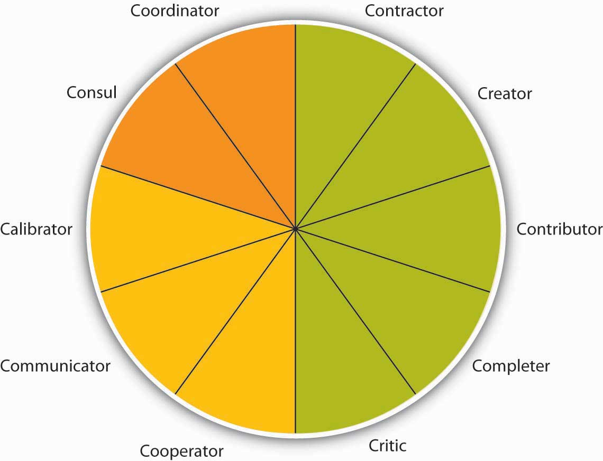

Reading this chapter will help you do the following:
Figure 13.2 The P-O-L-C Framework

Groups and teams are ubiquitous on the organizational landscape and managers will find that team management skills are required within each of the planning-organizing-leading-controlling (P-O-L-C) functions. For instance, planning may often occur in teams, particularly in less centralized organizations or toward the higher levels of the firm. When making decisions about the structure of the firm and individual jobs, managers conducting their organizing function must determine how teams will be used within the organization. Teams and groups have implications for the controlling function because teams require different performance assessments and rewards. Finally, teams and groups are a facet of the leading function. Today’s managers must be both good team members and good team leaders. Managing groups and teams is a key component of leadership.
In your personal life, you probably already belong to various groups such as the group of students in your management class; you may also belong to teams, such as an athletic team or a musical ensemble. In your career, you will undoubtedly be called on to be part of, and mostly likely to manage, groups and teams.
In Durham, North Carolina, Robert Henderson was opening a factory for General Electric Company (NYSE: GE). The goal of the factory was to manufacture the largest commercial jet engine in the world. Henderson’s opportunity was great and so were his challenges. GE hadn’t designed a jet engine from the ground up for over 2 decades. Developing the jet engine project had already cost GE $1.5 billion. That was a huge sum of money to invest—and an unacceptable sum to lose should things go wrong in the manufacturing stage.
How could one person fulfill such a vital corporate mission? The answer, Henderson decided, was that one person couldn’t fulfill the mission. Even Jack Welch, GE’s CEO at the time, said, “We now know where productivity comes from. It comes from challenged, empowered, excited, rewarded teams of people.”
Empowering factory workers to contribute to GE’s success sounded great in theory. But how to accomplish these goals in real life was a more challenging question. Factory floors, traditionally, are unempowered workplaces where workers are more like cogs in a vast machine than self-determining team members.
In the name of teamwork and profitability, Henderson traveled to other factories looking for places where worker autonomy was high. He implemented his favorite ideas at the factory at Durham. Instead of hiring generic “mechanics,” for example, Henderson hired staffers with FAA (Federal Aviation Administration) mechanic’s licenses. This superior training created a team capable of making vital decisions with minimal oversight, a fact that upped the factory’s output and his workers’ feelings of worth.
Henderson’s “self-managing” factory functioned beautifully. And it looked different, too. Plant manager Jack Fish described Henderson’s radical factory, saying Henderson “didn’t want to see supervisors, he didn’t want to see forklifts running all over the place, he didn’t even want it to look traditional. There’s clutter in most plants, racks of parts and so on. He didn’t want that.”
Henderson also contracted out non-job-related chores, such as bathroom cleaning, that might have been assigned to workers in traditional factories. His insistence that his workers should contribute their highest talents to the team showed how much he valued them. And his team valued their jobs in turn.
Six years later, a Fast Company reporter visiting the plant noted, “GE/Durham team members take such pride in the engines they make that they routinely take brooms in hand to sweep out the beds of the 18-wheelers that transport those engines—just to make sure that no damage occurs in transit.” For his part, Henderson, who remained at GE beyond the project, noted, “I was just constantly amazed by what was accomplished there.”
GE’s bottom line showed the benefits of teamwork, too. From the early 1980s, when Welch became CEO, until 2000, when he retired, GE generated more wealth than any organization in the history of the world.
Case written by [citation redacted per publisher request]. Based on information from Fishman, C. (1999, September). How teamwork took flight. Fast Company. Retrieved August 1, 2008, from http://www.fastcompany.com/node/38322/print; Lear, R. (1998, July–August). Jack Welch speaks: Wisdom from the world’s greatest business leader. Chief Executive; Guttman, H. (2008, January–February). Leading high-performance teams: Horizontal, high-performance teams with real decision-making clout and accountability for results can transform a company. Chief Executive, pp. 231–233.
Because many tasks in today’s world have become so complex, groups and teams have become an essential component of an organization’s success. The success of the group depends on the successful management of its members and making sure all aspects of work are fair for each member. Being able to work in a group is a key skill for managers and employees alike.
What is a groupA collection of individuals who interact with each other such that one person’s actions have an impact on the others.? A group is a collection of individuals who interact with each other such that one person’s actions have an impact on the others. In organizations, most work is done within groups, and managing groups is key to each of the P-O-L-C functions. How groups function has important implications for organizational productivity. Groups where people get along, feel the desire to contribute, and are capable of coordinating their efforts may have high performance levels, whereas those characterized by extreme levels of conflict or hostility may demoralize members of the workforce.
In organizations, groups can be classified into two basic types: informal and formal. Informal work groupsGroups made up of two or more individuals who are associated with one another in ways not prescribed by the formal organization. are made up of two or more individuals who are associated with one another in ways not prescribed by the formal organization. For example, a few people in the company who get together to play tennis on the weekend would be considered an informal group. A formal work groupA group made up of managers, subordinates, or both with close associations among group members that influence the behavior of individuals in the group. is made up of managers, subordinates, or both with close associations among group members that influence the behavior of individuals in the group. We will discuss many different types of formal work groups later on in this chapter.
American organizational psychologist Bruce Tuckman presented a robust model in 1965 that is still widely used today. On the basis of his observations of group behavior in a variety of settings, he proposed a four-stage map of group evolution, known as the Forming-Storming-Norming-Performing ModelA model proposed by Bruce Tuckman in 1965 involving a four-stage map of group evolution..Tuckman, B. (1965). Developmental sequence in small groups. Psychological Bulletin, 63, 384–399. Later he enhanced the model by adding a fifth and final stage, adjourningThe fifth and final stage of the Tuckman model.. The phases are illustrated in the Stages of the Group Development Model. Interestingly enough, just as an individual moves through developmental stages such as childhood, adolescence, and adulthood, so does a group, although in a much shorter period of time.
According to this theory, to facilitate a group successfully, the leader needs to move through various leadership styles over time. Generally, this is accomplished by first being more direct, eventually serving as a coach, and later, once the group is able to assume more power and responsibility for itself, shifting to delegator.
While research has not confirmed that this is descriptive of how groups progress, knowing and following these steps can help groups be more effective. For example, groups that do not go through the storming phase early on will often return to this stage toward the end of the group process to address unresolved issues. Another example of the validity of the group development model involves groups that take the time to get to know each other socially in the forming stage. When this socialization occurs, groups tend to handle future challenges better because the individuals have an understanding of each other’s needs.
Figure 13.4 Stages of the Group Development Model

In the FormingThe stage in which the group comes together for the first time. stage, the group comes together for the first time. The members may already know each other or they may be total strangers. In either case, there is a level of formality, some anxiety, and a degree of guardedness as group members are not sure what is going to happen next. “Will I be accepted? What will my role be? Who has the power here?” These are some of the questions participants think about during this stage of group formation. Because of the large amount of uncertainty, members tend to be polite, conflict avoidant, and observant. They are trying to figure out the “rules of the game” without being too vulnerable. At this point, they may also be quite excited and optimistic about the task, perhaps experiencing a level of pride at being chosen to join a particular group.
Group members are trying to achieve several goals at this stage, although this may not necessarily be done consciously. First, they are trying to get to know one another. Often this can be accomplished by finding some common ground. Members also begin to explore group boundaries to determine what will be considered acceptable behavior. “Can I interrupt? Can I leave when I feel like it?” This trial phase may also involve testing the appointed leader or seeing whether a leader emerges from the group. At this point, group members are also discovering how the group will work in terms of what needs to be done and who will be responsible for each task. This stage is often characterized by abstract discussions about issues to be addressed by the group; those who like to get moving can become impatient with this part of the process. This phase is usually short in duration, perhaps a meeting or two.
Once group members feel sufficiently safe and included, they tend to enter the StormingGroup members begin to explore their power and influence and they often stake out their territory by differentiating themselves from the other group members rather than seeking common ground. phase. Participants focus less on keeping their guard up as they shed social facades, becoming more authentic and more argumentative. Group members begin to explore their power and influence, and they often stake out their territory by differentiating themselves from the other group members rather than seeking common ground. Discussions can become heated as participants raise conflicting points of view and values, or disagree over how tasks should be done and who is assigned to them. It is not unusual for group members to become defensive, competitive, or jealous. They may take sides or begin to form cliques within the group. Questioning and resisting direction from the leader is also quite common. “Why should I have to do this? Who designed this project in the first place? What gives you the authority to tell me what to do?”
Although little seems to get accomplished at this stage, it actually serves an important purpose: group members are becoming more authentic as they express their deeper thoughts and feelings. What they are really exploring is “Can I truly be me, have power, and be accepted?” During this chaotic stage, a great deal of creative energy that was previously buried is released and available for use, but it takes skill to move the group from Storming to Norming. In many cases, the group gets stuck in the Storming phase.
Once group members discover that they can be authentic and that the group is capable of handling differences without dissolving, they are ready to enter the next stage, NormingThe stage in which participants find it easy to establish their own ground rules (or norms) and define their operating procedures and goals..
“We survived!” is the common sentiment as this stage. Group members often feel elated at this point, and they are much more committed to each other and the group’s goal. Feeling energized by knowing they can handle the “tough stuff,” group members are now ready to get to work. Finding themselves more cohesive and cooperative, participants find it easy to establish their own ground rules (or norms) and define their operating procedures and goals. The group tends to make big decisions, while subgroups or individuals handle the smaller decisions. It is hoped at this point the group members are more open and respectful toward each other and willing to ask one another for both help and feedback. They may even begin to form friendships and share more personal information.
At this point, the leader should become more of a facilitator by stepping back and letting the group assume more responsibility for its goal. Since the group’s energy is running high, this is an ideal time to host a social or team-building event.
Galvanized by a sense of shared vision and a feeling of unity, the group is ready to go into high gear. Members are more interdependent, individuality and differences are respected, and group members feel themselves to be part of a greater entity. At the PerformingThe stage in which participants are not only getting the work done, but they also pay greater attention to how they are doing it. stage, participants are not only getting the work done, but they also pay greater attention to how they are doing it. They ask such questions as, “Do our operating procedures best support productivity and quality assurance? Do we have suitable means for addressing differences that arise so we can preempt destructive conflicts? Are we relating to and communicating with each other in ways that enhance group dynamics and help us achieve our goals? How can I further develop as a person to become more effective?” By now, the group has matured, becoming more competent, autonomous, and insightful.
Group leaders can finally move into coaching roles and help members grow in skill and leadership. These leadership shifts are essential for managers enacting the Leadership function to keep in mind. In fact, a manager who leads multiple teams may find it necessary to shift leadership styles not only over time but between teams at different stages.
Just as groups form, so do they end. For example, many groups or teams formed in a business context are project-oriented and therefore are temporary. Alternatively, a working group may dissolve because of an organizational restructuring. As with graduating from school or leaving home for the first time, these endings can be bittersweet, with group members feeling a combination of victory, grief, and insecurity about what is coming next. For those who like routine and bond closely with fellow group members, this transition can be particularly challenging. Group leaders and members alike should be sensitive to handling these endings respectfully and compassionately. An ideal way to close a group is to set aside time to debrief (“How did it all go? What did we learn?”), acknowledge one another, and celebrate a job well done.
As you may have noted, the five-stage model we have just reviewed is a linear process. According to the model, a group progresses to the Performing stage, at which point it finds itself in an ongoing, smooth-sailing situation until the group dissolves. In reality, subsequent researchers, most notably Joy H. Karriker, have found that the life of a group is much more dynamic and cyclical in nature.Karriker, J. H. (2005). Cyclical group development and interaction-based leadership emergence in autonomous teams: an integrated model. Journal of Leadership & Organizational Studies, 11(4), 54–64. For example, a group may operate in the Performing stage for several months. Then, because of a disruption, such as a competing emerging technology that changes the rules of the game or the introduction of a new CEO, the group may move back into the Storming phase before returning to Performing. Ideally, any regression in the linear group progression will ultimately result in a higher level of functioning. Proponents of this cyclical model draw from behavioral scientist Connie Gersick’s study of punctuated equilibriumThe theory that change within groups occurs in rapid, radical spurts rather than gradually over time..Gersick, C. J. G. (1991). Revolutionary change theories: A multilevel exploration of the punctuated equilibrium paradigm. Academy of Management Review, 16(1), 10–36.
The concept of punctuated equilibrium was first proposed in 1972 by paleontologists Niles Eldredge and Stephen Jay Gould, who both believed that evolution occurred in rapid, radical spurts rather than gradually over time. Identifying numerous examples of this pattern in social behavior, Gersick found that the concept applied to organizational change. She proposed that groups remain fairly static, maintaining a certain equilibrium for long periods. Change during these periods is incremental, largely due to the resistance to change that arises when systems take root and processes become institutionalized. In this model, revolutionary change occurs in brief, punctuated bursts, generally catalyzed by a crisis or a problem that breaks through the systemic inertia and shakes up the deep organizational structures in place. At this point, the organization or group has the opportunity to learn and create new structures that are better aligned with current realities. Whether the group does this is not guaranteed. In sum, in Gersick’s model, groups can repeatedly cycle through the Storming and Performing stages, with revolutionary change taking place during short transitional windows. For organizations and groups who understand that disruption, conflict, and chaos are inevitable in the life of a social system, these disruptions represent opportunities for innovation and creativity.
Figure 13.5 The Punctuated Equilibrium Model
CohesionThe degree of camaraderie within the group. can be thought of as a kind of social glue. It refers to the degree of camaraderie within the group. Cohesive groups are those in which members are attached to each other and act as one unit. The more cohesive a group, the more productive it will be and the more rewarding the experience will be for the group’s members.Beal, D. J., Cohen, R. R., Burke, M. J., & McLendon, C. L. (2003). Cohesion and performance in groups: A meta-analytic clarification of construct relations. Journal of Applied Psychology, 88, 989–1004; Evans, C. R., & Dion, K. L. (1991). Group cohesion and performance: A meta-analysis. Small Group Research, 22, 175–186. Cohesive groups tend to have the following characteristics: they have a collective identity; they experience a moral bond and a desire to remain part of the group; they share a sense of purpose, working together on a meaningful task or cause; and they establish a structured pattern of communication.
The fundamental factors affecting group cohesion include the following:
As you might imagine, there are many benefits in creating a cohesive group. Members are generally more personally satisfied and feel greater self-confidence and self-esteem in a group where they feel they belong. For many, membership in such a group can be a buffer against stress, which can improve mental and physical well-being. Because members are invested in the group and its work, they are more likely to regularly attend and actively participate in the group, taking more responsibility for the group’s functioning. In addition, members can draw on the strength of the group to persevere through challenging situations that might otherwise be too hard to tackle alone.
Despite the advantages of cohesion, too much cohesion can be detrimental to a group. Because members can come to value belonging over all else, an internal pressure to conform may arise where some members modify their behavior to adhere to group norms. Members may become conflict avoidant, focusing on trying to please one another so as not to be ostracized. In some cases, members might censor themselves to maintain the party line. As such, the group is dominated by a superficial sense of harmony and discourages diversity of thought. Having less tolerance for deviants, who threaten the group’s static identity, cohesive groups will often disapprove of members who dare to disagree. Members attempting to make a change may be criticized, undermined, or even ostracized by other members, who perceive their attempts as a threat to the status quo. The painful possibility of being marginalized can keep many members in line with the majority.
The more strongly members identify with the group, the easier it is to see outsiders as inferior or, in extreme cases, as enemies. It is easy to see how this can lead to increased insularity. This form of prejudice can have a downward spiral effect. The group is not getting corrective feedback from within its own confines, and it is closing itself off from input and a cross-fertilization of ideas from the outside. In such an environment, groups can easily adopt extreme ideas that will not be challenged. Denial increases as problems are ignored and failures are blamed on external factors. With limited, often biased, information and no internal or external opposition, groups like these can make disastrous decisions.
GroupthinkA group pressure phenomenon that increases the risk of the group making flawed decisions by allowing reductions in mental efficiency, reality testing, and moral judgment. is a group pressure phenomenon that increases the risk of the group making flawed decisions by allowing reductions in mental efficiency, reality testing, and moral judgment. A famous example of groupthink is the decision to invade Cuba made by President John F. Kennedy and his cabinet in 1961. In a matter of days, Cuban forces repelled the invaders, whose objective was to overthrow the entire Cuban government, resulting in many casualties and captured troops. In retrospect, there were many reasons why the Bay of Pigs invasion was doomed from the start, but the planning and approval were characterized by a belief that the insiders knew best and did not need to consider “devil’s advocate” points of view. As this example illustrates, groupthink is a serious risk in highly cohesive groups.Janis, I. L. (1972). Victims of groupthink. New York: Houghton Mifflin.
Cohesive groups can go awry in much milder ways. For example, group members can value their social interactions so much that they have fun together but spend little time on accomplishing their assigned task. Or a group’s goal may begin to diverge from the larger organization’s goal and those trying to uphold the organization’s goal may be criticized (for example, students may tease the class “brain” for doing well in school).
In addition, research shows that cohesion leads to acceptance of group norms.Goodman, P. S., Ravlin, E., & Schminke, M. (1987). Understanding groups in organizations. Research in Organizational Behavior, 9, 121–173. Groups with high task commitment tend to do well, but suppose you belong to a group in which the norms are to work as little as possible! As you might imagine, these groups accomplish little and can actually work together against the organization’s goals.
Figure 13.6

Groups with high cohesion and high task commitment tend to be the most effective.
Social loafingThe tendency of individuals to put in less effort when working in a group context. refers to the tendency of individuals to put in less effort when working in a group context. This phenomenon, also known as the Ringelmann effect, was first noted by French agricultural engineer Max Ringelmann in 1913. In one study, he had people pull on a rope individually and in groups. He found that as the number of people pulling increased, the group’s total pulling force was less than the sum of individual efforts had been when measured alone.Karau, S. J., & Williams, K. D. (1993). Social loafing: A meta-analytic review and theoretical integration. Journal of Personality and Social Psychology, 65, 681–706.
Why do people work less hard when they are working with other people? Observations show that as the size of the group grows, this effect becomes larger as well.Karau, S. J., & Williams, K. D. (1993). Social loafing: A meta-analytic review and theoretical integration. Journal of Personality and Social Psychology, 65, 681–706. The social loafing tendency is not so much a matter of laziness as a matter of perceiving that one will receive neither one’s fair share of rewards if the group is successful nor blame if the group fails. Rationales for this behavior include, “My own effort will have little effect on the outcome.” “Others aren’t pulling their weight, so why should I?” Or “I don’t have much to contribute, and no one will notice anyway.” This is a consistent effect across a great number of group tasks and countries.Gabrenya, W. L., Latane, B., & Wang, Y. (1983). Social loafing in cross-cultural perspective. Journal of Cross-Cultural Perspective, 14, 368–384; Harkins, S., & Petty, R. E. (1982). Effects of task difficulty and task uniqueness on social loafing. Journal of Personality and Social Psychology, 43, 1214–1229; Taylor, D. W., & Faust, W. L. (1952). Twenty questions: Efficiency of problem-solving as a function of the size of the group. Journal of Experimental Psychology, 44, 360–363; Ziller, R. C. (1957). Four techniques of group decision-making under uncertainty. Journal of Applied Psychology, 41, 384–388. Research also shows that perceptions of fairness are related to less social loafing.Price, K. H., Harrison, D. A., & Gavin, J. H. (2006). Withholding inputs in team contexts: Member composition, interaction processes, evaluation structure, and social loafing. Journal of Applied Psychology, 91, 1375–1384. Therefore, teams that are deemed as more fair should also see less social loafing.
Collective efficacyA group’s perception of its ability to successfully perform well. refers to a group’s perception of its ability to successfully perform well.Bandura, A. (1997). Self-efficacy: The exercise of control. San Francisco: Jossey-Bass. A group with high collective efficacy is one whose members share a belief in the group’s capability to pursue its agreed-upon course of action and attain its goals. Collective efficacy is influenced by a number of factors, including watching others (“that group did it and we’re better than them”), verbal persuasion (“we can do this”), and how a person feels (“this is a good group”). Research shows that a group’s collective efficacy is positively related to its performance.Gully, S. M., Incalcaterra, K. A., Joshi, A., & Beaubien, J. M. (2002). A meta-analysis of team-efficacy, potency, and performance: Interdependence and level of analysis as moderators of observed relationships. Journal of Applied Psychology, 87, 819–832; Porter, C. O. L. H (2005). Goal orientation: Effects on backing up behavior, performance, efficacy, and commitment in teams. Journal of Applied Psychology, 90, 811–818; Tasa, K., Taggar, S., & Seijts, G. H. (2007). The development of collective efficacy in teams: A multilevel and longitudinal perspective. Journal of Applied Psychology, 92, 17–27. In addition, this relationship is stronger when task interdependence (the degree an individual’s task is linked to someone else’s work) is high rather than low.
Groups may be either formal or informal. Groups go through developmental stages much like individuals do. The Forming-Storming-Norming-Performing-Adjourning Model is useful in prescribing stages that groups should pay attention to as they develop. The punctuated-equilibrium model of group development argues that groups often move forward during bursts of change after long periods without change. Groups that are similar, stable, small, supportive, and satisfied tend to be more cohesive than groups that are not. Cohesion can help support group performance if the group values task completion, but too much cohesion can also be a concern for groups. Social loafing increases as groups become larger. When collective efficacy is high, groups tend to perform better.
Effective teams give companies a significant competitive advantage. In a high-functioning team, the sum is truly greater than the parts. Team members not only benefit from one another’s diverse experiences and perspectives but also stimulate each other’s creativity. Plus, for many people, working in a team can be more fun than working alone. Let’s take a closer look at what a team is, the different team characteristics, types of teams companies use, and how to design effective teams.
Organizations consist of groups of people. What exactly is the difference between a group and a team? A group is a collection of individuals. Within an organization, groups might consist of project-related groups such as a product group or division or they can encompass an entire store or branch of a company. The performance of a group consists of the inputs of the group minus any process losses such as the quality of a product, ramp-up time to production, or the sales for a given month. Process lossAny aspect of group interaction that inhibits group functioning. is any aspect of group interaction that inhibits group functioning.
Why do we say group instead of team? A collection of people is not a team, though they may learn to function in that way. A teamA cohesive coalition of people working together to achieve mutual goals. is a particular type of group: a cohesive coalition of people working together to achieve mutual goals. Being on a team does not equate to a total suppression of personal agendas, but it does require a commitment to the vision and involves each individual working toward accomplishing the team’s objective. Teams differ from other types of groups in that members are focused on a joint goal or product, such as a presentation, discussing a topic, writing a report, creating a new design or prototype, or winning a team Olympic medal. Moreover, teams also tend to be defined by their relatively smaller size. For instance, according to one definition, “A team is a small number of people with complementary skills who are committed to a common purpose, performance goals, and approach for which they are mutually accountable.”Katzenbach, J. R., & Smith, D. K. (1993). The wisdom of teams: Creating the high-performance organization. Boston: Harvard Business School.
Figure 13.7

Teams are only as good as their weakest link. While Michael Phelps has been dubbed “the world’s greatest swimmer” and received a great deal of personal attention, such as meeting President George W. Bush, he could not have achieved his record eight gold medals in one Olympic games without the help of his teammates Aaron Peirsol, Brendan Hansen, and Jason Lezak.
The purpose of assembling a team is to accomplish larger, more complex goals than what would be possible for an individual working alone or even the simple sum of several individuals working independently. Teamwork is also needed in cases where multiple skills are tapped or where buy-in is required from several individuals. Teams can, but do not always, provide improved performance. Working together to further a team agenda seems to increase mutual cooperation between what are often competing factions. The aim and purpose of a team is to perform, get results, and achieve victory in the workplace. The best managers are those who can gather together a group of individuals and mold them into an effective team.
The key properties of a true team include collaborative action where, along with a common goal, teams have collaborative tasks. Conversely, in a group, individuals are responsible only for their own area. They also share the rewards of strong team performance with their compensation based on shared outcomes. Compensation of individuals must be based primarily on a shared outcome, not individual performance. Members are also willing to sacrifice for the common good in which individuals give up scarce resources for the common good instead of competing for those resources. For example, teams occur in sports such as soccer and basketball, in which the individuals actively help each other, forgo their own chance to score by passing the ball, and win or lose collectively as a team.
The early 1990s saw a dramatic rise in the use of teams within organizations, along with dramatic results such as the Miller Brewing Company increasing productivity 30% in the plants that used self-directed teams compared with those that used the traditional organization. This same method allowed Texas Instruments in Malaysia to reduce defects from 100 parts per million to 20 parts per million. In addition, Westinghouse reduced its cycle time from 12 weeks to 2 weeks, and Harris Electronics was able to achieve an 18% reduction in costs.Welins, R., Byham, W., & Dixon, G. (1994). Inside Teams. San Francisco: Jossey-Bass. The team method has served countless companies over the years through both quantifiable improvements and more subtle individual worker-related benefits.
Companies such as Square D, a maker of circuit breakers, switched to self-directed teams and found that overtime on machines like the punch press dropped 70% under teams. Productivity increased because the setup operators were able to manipulate the work in much more effective ways than a supervisor could dictate.Moskal, B. (1988, June 20). Supervisors, begone! Industry Week, p. 32. In 2001, clothing retailer Chico’s FAS was looking to grow its business. The company hired Scott Edmonds as president, and two years later revenues had almost doubled from $378 million to $760 million. By 2006, revenues were $1.6 billion, and Chico’s had nine years of double-digit same-store sales growth. What did Edmonds do to get these results? He created a horizontal organization “ruled by high-performance teams with real decision-making clout and accountability for results, rather than by committees that pass decisions up to the next level or toss them over the wall into the nearest silo.”
The use of teams also began to increase because advances in technology have resulted in more complex systems that require contributions from multiple people across the organization. Overall, team-based organizations have more motivation and involvement, and teams can often accomplish more than individuals.Cannon-Bowers, J. A. and Salas, E. (2001, February). Team effectiveness and competencies. In W. Karwowski (Ed.), International encyclopedia of ergonomics and human factors (1383). London: CRC Press. It is no wonder organizations are relying on teams more and more.
Teams are not a cure-all for organizations. To determine whether a team is needed, organizations should consider whether a variety of knowledge, skills, and abilities are needed, whether ideas and feedback are needed from different groups within the organization, how interdependent the tasks are, if wide cooperation is needed to get things done, and whether the organization would benefit from shared goals.Rees, F. (1997). Teamwork from start to finish. San Francisco: Jossey-Bass. If the answer to these questions is “yes,” then a team or teams might make sense. For example, research shows that the more team members perceive that outcomes are interdependent, the better they share information and the better they perform.De Dreu, C. K. W. (2007). Cooperative outcome interdependence, task reflexivity, and team effectiveness: A motivated information processing perspective. Journal of Applied Psychology, 92, 628–638.
Teams differ in terms of the tasks they are trying to accomplish and the roles team members play.
As early as the 1970s, J. R. Hackman identified three major classes of tasks: (1) production tasks, (2) idea generation tasks, and (3) problem-solving tasks.Hackman, J. R. (1976). Group influences on individuals. In M. D. Dunnette (Ed.), Handbook of industrial and organizational psychology. Chicago: Rand-McNally. Production tasksTasks that include actually making something such as a building, product, or a marketing plan. include actually making something, such as a building, a product, or a marketing plan. Idea generation tasksCreative tasks such as brainstorming a new direction or creating a new process. deal with creative tasks, such as brainstorming a new direction or creating a new process. Problem-solving tasksTasks involving coming up with plans for actions and making decision. refer to coming up with plans for actions and making decisions, both facets of managerial P-O-L-C functions (planning and leading). For example, a team may be charged with coming up with a new marketing slogan, which is an idea generation task, while another team might be asked to manage an entire line of products, including making decisions about products to produce, managing the production of the product lines, marketing them, and staffing their division. The second team has all three types of tasks to accomplish at different points in time.
Another key to understanding how tasks are related to teams is to understand their level of task interdependence. Task interdependenceThe degree that team members depend on one another to get information, support, or materials from other team members to be effective. refers to the degree that team members depend on one another to get information, support, or materials from other team members to be effective. Research shows that self-managing teams are most effective when their tasks are highly interdependent.Langfred, C. W. (2005). Autonomy and performance in teams: The multilevel moderating effect of task interdependence. Journal of Management, 31, 513–529; Liden, R. C., Wayne, S. J., & Bradway, L. K. (1997). Task interdependence as a moderator of the relation between group control and performance. Human Relations, 50, 169–181.
There are three types of task interdependence. Pooled interdependenceThis exists when team members may work independently and simply combine their efforts to create the team’s output. exists when team members may work independently and simply combine their efforts to create the team’s output. For example, when students meet to divide the sections of a research paper and one person simply puts all the sections together to create one paper, the team is using the pooled interdependence model. However, they might decide that it makes more sense to start with one person writing the introduction of their research paper, then the second person reads what was written by the first person and, drawing from this section, writes about the findings within the paper. Using the findings section, the third person writes the conclusions. If one person’s output becomes another person’s input, the team would be experiencing sequential interdependenceWhere one person’s output becomes another person’s input. . And finally, if the student team decided that in order to create a top notch research paper they should work together on each phase of the research paper so that their best ideas would be captured at each stage, they would be undertaking reciprocal interdependenceThe point at which team members work on each task simultaneously.. Another important type of interdependence that is not specific to the task itself is outcome interdependenceA time when rewards that an individual receives depend on the performance of others., where the rewards that an individual receives depend on the performance of others.
While relatively little research has been conducted on team roles, recent studies show that individuals who are more aware of team roles and the behavior required for each role perform better than individuals that do not. This fact remains true for both student project teams as well as work teams, even after accounting for intelligence and personality.Mumford, T. V., Van Iddekinge, C. H., Morgeson, F. P., & Campion, M. A. (2008). The team role test: Development and validation of a team role knowledge situational judgment test. Journal of Applied Psychology, 93, 250–267. Early research found that teams tend to have two categories of roles: those related to the tasks at hand and those related to the team’s functioning. For example, teams that only focus on production at all costs may be successful in the short run, but if they pay no attention to how team members feel about working 70 hours a week, they are likely to experience high turnover.
On the basis of decades of research on teams, 10 key roles have been identified.Bales, R. F. (1950). Interaction process analysis: A method for the study of small groups. Cambridge, MA: Addison-Wesley; Benne, K. D., & Sheats, P. (1948). Functional roles of group members. Journal of Social Issues, 4, 41–49; Belbin, R. M. (1993). Management teams: Why they succeed or fail. Oxford: Butterworth-Heinemann. Team leadership is effective when leaders are able to adapt the roles they are contributing to or asking others to contribute to fit what the team needs, given its stage and the tasks at hand.Kozlowski, S. W. J., Gully, S. M., McHugh, P. P., Salas, E., & Cannon-Bowers, J. A. (1996). A dynamic theory of leadership and team effectiveness: Developmental and task contingent roles. In G. Ferris (Ed.), Research in personnel and human resource management (Vol. 14, pp. 253–305). Greenwich, CT: JAI Press; Kozlowski, S. W. J., Gully, S. M., Salas, E., & Cannon-Bowers, J. A. (1996). Team leadership and development: Theory, principles, and guidelines for training leaders and teams. In M. M. Beyerlein, D. A. Johnson, & S. T. Beyerlein (Eds.), Advances in interdisciplinary studies of work teams (Vol. 3, pp. 253–291). Greenwich, CT: JAI Press. Ineffective leaders might always engage in the same task role behaviors when what they really need to do is focus on social roles, put disagreements aside, and get back to work. While these behaviors can be effective from time to time, if the team doesn’t modify its role behaviors as things change, they most likely will not be effective.
Figure 13.9
Teams are based on many roles being carried out as summarized by the Team Role Typology. These 10 roles include task roles (green), social roles (yellow), and boundary spanning roles (orange).
Source: Mumford, T. V., Van Iddekinge, C. H., Morgeson, F. P., & Campion, M. A. (2008). The team role test: Development and validation of a team role knowledge situational judgment test. Journal of Applied Psychology, 93, 250–267; Mumford, T. V., Campion, M. A., & Morgeson, F. P. (2006). Situational judgments in work teams: A team role typology. In J. A. Weekley & R. E. Ployhart (Eds.), Situational judgment tests: Theory, measurement (pp. 319–343). Mahwah, NJ: Lawrence Erlbaum.
Five roles make up the task portion of the role typology. The contractor role includes behaviors that serve to organize the team’s work, including creating team time lines, production schedules, and task sequencing. The creator role deals more with changes in the team’s task process structure. For example, reframing the team goals and looking at the context of goals would fall under this role. The contributor role is important because it brings information and expertise to the team. This role is characterized by sharing knowledge and training those who have less expertise to strengthen the team. Research shows that teams with highly intelligent members and evenly distributed workloads are more effective than those with uneven workloads.Ellis, A. P. J., Hollenbeck, J. R., Ilgen, D. R., Porter, C. O. L. H., West, B. J., & Moon, H. (2003). Team learning: Collectively connecting the dots. Journal of Applied Psychology, 88, 821–835. The completer role is also important as it is often where ideas are transformed into action. Behaviors associated with this role include following up on tasks such as gathering needed background information or summarizing the team’s ideas into reports. Finally, the critic role includes “devil’s advocate” behaviors which go against the assumptions being made by the team.
Social roles serve to keep the team operating effectively. When the social roles are filled, team members feel more cohesive and the group is less prone to suffer process losses or biases, such as social loafing, groupthink, or a lack of participation from all members. Three roles fall under the umbrella of social roles. The cooperator role includes supporting those with expertise toward the team’s goals. This is a proactive role. The communicator role includes behaviors that are targeted at collaboration such as practicing good listening skills and appropriately using humor to diffuse tense situations. Having a good communicator helps the team to feel more open to sharing ideas. And the calibrator role is an important one and serves to keep the team on track in terms of suggesting any needed changes to the team’s process. This role includes initiating discussions about potential team problems such as power struggles or other tensions. Similarly, this role may involve settling disagreements or pointing out what is working and what is not in terms of team process.
The final two roles are related to activities outside of the team that help to connect the team to the larger organization.Anacona, D. G. (1990). Outward bound: Strategies for team survival in an organization. Academy of Management Journal, 33, 334–365; Anacona, D. G. (1992). Bridging the boundary: External activity and performance in organizational teams. Administrative Science Quarterly, 37, 634–665; Druskat, V. U., & Wheeler, J. V. (2003). Managing from the boundary: The effective leadership of self-managing work teams. Academy of Management Journal, 46, 435–457. Teams that engage in a greater level of boundary-spanning behaviors increase their team effectiveness.Marrone, J. A., Tesluk, P. E., & Carson, J. B. (2007). A multi-level investigation of antecedents and consequences of team member boundary-spanning behavior. Academy of Management Journal, 50, 1423–1439. The consul role includes gathering information from the larger organization and informing those within the organization about team activities, goals, and successes. Often the consul role is filled by team managers or leaders. The coordinator role includes interfacing with others within the organization so that the team’s efforts are in line with other individuals and teams within the organization.
There are many different types of teams, and a given team may be described according to multiple types. For example, a team of scientists writing a research article for publication may be temporary, virtual, and cross-functional.
Teams may be permanent or long term, but more typically, a team exists for a limited time. In fact, one-third of all teams in the United States are temporary.Gordon, J. (1992). Work teams: How far have they come? Training, 29, 59–62. An example of a temporary team is a task forceA temporary team that is asked to address a specific issue or problem until it is resolved. that addresses a specific issue or problem until it is resolved. Other teams may be temporary or ongoing such as product development teamsA type of team that may be either temporary or ongoing.. In addition, matrix organizations have cross-functional teamsTeams that involve individuals from different parts of the organization staff. where individuals from different parts of the organization staff the team, which may be temporary or long-standing.
Virtual teamsTeams in which members are not located in the same physical place. are teams in which members are not located in the same physical place. They may be in different cities, states, or even different countries. Some virtual teams are formed by necessity, such as to take advantage of lower labor costs in different countries; one study found that upward of 8.4 million individuals worldwide work virtually in at least one team.Ahuja, M., & Galvin, J. (2003). Socialization in virtual group. Journal of Management, 29, 161–185. Often, virtual teams are formed to take advantage of distributed expertise or time—the needed experts may be living in different cities. A company that sells products around the world, for example, may need technologists who can solve customer problems at any hour of the day or night. It may be difficult to find the caliber of people needed who would be willing to work at 2 a.m. on a Saturday, for example. So companies organize virtual technical support teams. BakBone Software, for instance, has a 13-member technical support team. Each member has a degree in computer science and is divided among offices in California, Maryland, England, and Tokyo. BakBone believes it has been able to hire stronger candidates by drawing from a diverse talent pool and hiring in different geographic regions rather than limiting hiring to one region or time zone.Alexander, S. (2000, November 10). Virtual teams going global. Infoworld. Retrieved February 12, 2009, from http://www.infoworld.com/articles/ca/xml/00/11/13/001113cavirtual.html.
Despite potential benefits, virtual teams present special management challenges, particularly to the controlling function. Managers often think that they have to see team members working to believe that work is being done. Because this kind of oversight is impossible in virtual team situations, it is important to devise evaluation schemes that focus on deliverables. Are team members delivering what they said they would? In self-managed teams, are team members producing the results the team decided to measure itself on?
Another special challenge of virtual teams is building trustThe belief that the other party will show integrity, fairness, and predictability in one’s actions toward the other.. Will team members deliver results just as they would in face-to-face teams? Can members trust one another to do what they said they would do? Companies often invest in bringing a virtual team together at least once so members can get to know one another and build trust.Kirkman, B. L., Rosen, B., Gibson, C. B., Tesluk, P. E., & McPherson, S. O. (2002). Five challenges to virtual team success: Lessons from Sabre, Inc. Academy of Management Executive, 16, 67–79. In manager-led virtual teams, managers should be held accountable for their team’s results and evaluated on their ability as a team leader.
Finally, communication is especially important in virtual teams, through e-mail, phone calls, conference calls, or project management tools that help organize work. If individuals in a virtual team are not fully engaged and tend to avoid conflict, team performance can suffer.Montoya-Weiss, M. M., Massey, A. P., & Song, M. (2001). Getting it together: Temporal coordination and conflict management in global virtual teams. Academy of Management Journal, 44, 1251–1262. A wikiAn Internet-based method for many people to collaborate and contribute to a document or discussion. is an Internet-based method for many people to collaborate and contribute to a document or discussion. Essentially, the document remains available for team members to access and amend at any time. The most famous example is Wikipedia, which is gaining traction as a way to structure project work globally and get information into the hands of those that need it. Empowered organizations put information into everyone’s hands.Kirkman, B. L., & Rosen, B. (2000). Powering up teams. Organizational Dynamics, 28(3), 48–66. Research shows that empowered teams are more effective than those that are not empowered.Mathieu, J. E., Gilson, L. L., & Ruddy, T. M. (2006). Empowerment and team effectiveness: An empirical test of an integrated model. Journal of Applied Psychology, 91, 97–108.
Top management teamsTeams that are appointed by the chief executive officer (CEO) and, ideally, reflect the skills and areas that the CEO considers vital for the company. are appointed by the chief executive officer (CEO) and, ideally, reflect the skills and areas that the CEO considers vital for the company. There are no formal rules about top management team design or structure. The top management team often includes representatives from functional areas, such as finance, human resources, and marketing or key geographic areas, such as Europe, Asia, and North America. Depending on the company, other areas may be represented such as legal counsel or the company’s chief technologist. Typical top management team member titles include chief operating officer (COO), chief financial officer (CFO), chief marketing officer (CMO), or chief technology officer (CTO). Because CEOs spend an increasing amount of time outside their companies (i.e., with suppliers, customers, regulators, and so on), the role of the COO has taken on a much higher level of internal operating responsibilities. In most American companies, the CEO also serves as chairman of the board and can have the additional title of president. Companies have top management teams to help set the company’s vision and strategic direction, key tasks within the planning P-O-L-C function. Top teams make decisions on new markets, expansions, acquisitions, or divestitures. The top team is also important for its symbolic role: how the top team behaves dictates the organization’s culture and priorities by allocating resources and by modeling behaviors that will likely be emulated lower down in the organization. Importantly, the top team is most effective when team composition is functionally and demographically diverse and when it can truly operate as a team, not just as group of individual executives.Carpenter, M. A., Geletkanycz, M. A., & Sanders, W. G. (2004). The upper echelons revisited: The antecedents, elements, and consequences of TMT composition. Journal of Management, 30, 749–778.
That “the people make the place” holds especially true for members of the top management team. In a study of 15 firms that demonstrated excellence, defined as sustained performance over a 15-year period, leadership researcher Jim Collins noted that those firms attended to people first and strategy second. “They got the right people on the bus, moved the wrong people off the bus, ushered the right people to the right seats—then they figured out where to drive it.”Collins, J. (2001, July–August). Level leadership. Harvard Business Review, 66–76. The best teams plan for turnover. Succession planning is the process of identifying future members of the top management team. Effective succession planning allows the best top teams to achieve high performance today and create a legacy of high performance for the future.
Teams also vary in terms of how they are led. Traditional or manager-led teamsTeams where the manager serves as the team leader. are teams in which the manager serves as the team leader. The manager assigns work to other team members. These types of teams are the most natural to form, wherein managers have the power to hire and fire team members and are held accountable for the team’s results.
Self-managed teamsTeams that manage themselves and do not report directly to a supervisor. Instead, team members select their own leader, and they may even take turns in the leadership role. are a new form of team that rose in popularity with the Total Quality Movement in the 1980s. Unlike manager-led teams, these teams manage themselves and do not report directly to a supervisor. Instead, team members select their own leader, and they may even take turns in the leadership role. Self-managed teams also have the power to select new team members. As a whole, the team shares responsibility for a significant task, such as assembly of an entire car. The task is ongoing rather than temporary such as a charity fund drive for a given year.
Organizations began to use self-managed teams as a way to reduce hierarchy by allowing team members to complete tasks and solve problems on their own. The benefits of self-managed teams extend much further. Research has shown that employees in self-managed teams have higher job satisfaction, increased self-esteem, and grow more on the job. The benefits to the organization include increased productivity, increased flexibility, and lower turnover. Self-managed teams can be found at all levels of the organization, and they bring particular benefits to lower-level employees by giving them a sense of ownership of their jobs that they may not otherwise have. The increased satisfaction can also reduce absenteeism because employees do not want to let their team members down.
Typical team goals are improving quality, reducing costs, and meeting deadlines. Teams also have a “stretch” goal, which is difficult to reach but important to the business unit. Many teams also have special project goals. Texas Instruments (TI), a company that makes semiconductors, used self-directed teams to make improvements in work processes.Welins, R., Byham, W., & Dixon, G. (1994). Inside teams. San Francisco: Jossey-Bass. Teams were allowed to set their own goals in conjunction with managers and other teams. TI also added an individual component to the typical team compensation system. This individual component rewarded team members for learning new skills that added to their knowledge. These “knowledge blocks” include topics such as leadership, administration, and problem solving. The team decides what additional skills people might need to help the team meet its objectives. Team members would then take classes or otherwise demonstrate their proficiency in that new skill on the job to be certified for mastering the skill. Individuals could then be evaluated based on their contribution to the team and how they are building skills to support the team.
Self-managed teams are empoweredTeams that have the responsibility as well as the authority to achieve their goals., which means that they have the responsibility as well as the authority to achieve their goals. Team members have the power to control tasks and processes and to make decisions. Research shows that self-managed teams may be at a higher risk of suffering from negative outcomes due to conflict, so it is important that they are supported with training to help them deal with conflict effectively.Alper, S., Tjosvold, D., & Law, K. S. (2000). Conflict management, efficacy, and performance in organizational teams. Personnel Psychology, 53, 625–642; Langfred, C. W. (2007). The downside of self-management: A longitudinal study of the effects of conflict on trust, autonomy, and task interdependence in self-managing teams. Academy of Management Journal, 50, 885–900. Self-managed teams may still have a leader who helps them coordinate with the larger organization.Morgeson, F. P. (2005). The external leadership of self-managing teams: Intervening in the context of novel and disruptive events. Journal of Applied Psychology, 90, 497–508. For a product team composed of engineering, production, and marketing employees, empowerment means that the team can decide everything about a product’s appearance, production, and cost without having to get permission or sign-off from higher management. As a result, empowered teams can more effectively meet tighter deadlines. At AT&T, for example, the model-4200 phone team cut development time in half while lowering costs and improving quality by using the empowered team approach.Parker, G. (1994). Cross-functional teams. San Francisco: Jossey-Bass. A special form of self-managed teams are self-directed teamsA special form of self-managed teams in which members determine who will lead them with no external oversight. in which they also determine who will lead them with no external oversight.
Figure 13.10

Team leadership is a major determinant of how autonomous a team can be.
Designing an effective team means making decisions about team composition (who should be on the team), team size (the optimal number of people on the team), and team diversity (should team members be of similar background, such as all engineers, or of different backgrounds). Answering these questions will depend, to a large extent, on the type of task that the team will be performing. Teams can be charged with a variety of tasks, from problem solving to generating creative and innovative ideas to managing the daily operations of a manufacturing plant.
A key consideration when forming a team is to ensure that all the team members are qualified for the roles they will fill for the team. This process often entails understanding the knowledge, skills, and abilities (KSAs) of team members as well as the personality traits needed before starting the selection process.Humphrey, S. E., Hollenbeck, J. R., Meyer, C. J., & Ilgen, D. R. (2007). Trait configurations in self-managed teams: A conceptual examination of the use of seeding for maximizing and minimizing trait variance in teams. Journal of Applied Psychology, 92, 885–892. When talking to potential team members, be sure to communicate the job requirements and norms of the team. To the degree that this is not possible, such as when already existing groups are used, think of ways to train the team members as much as possible to help ensure success. In addition to task knowledge, research has shown that individuals who understand the concepts covered in this chapter and in this book such as conflict resolution, motivation, planning, and leadership actually perform better on their jobs. This finding holds for a variety of jobs, including officer in the United States Air Force, an employee at a pulp mill, or a team member at a box manufacturing plant.Hirschfeld, R. R., Jordan, M. H., Field, H. S., Giles, W. F., & Armenakis, A. A. (2006). Becoming team players: Team members’ mastery of teamwork knowledge as a predictor of team task proficiency and observed teamwork effectiveness. Journal of Applied Psychology, 91, 467–474; Stevens, M. J., & Campion, M. A. (1999). Staffing work teams: Development and validation of a selection test for teamwork settings. Journal of Management, 25, 207–228.
Interestingly, research has shown that regardless of team size, the most active team member speaks 43% of the time. The difference is that the team member who participates the least in a three-person team is still active 23% of the time versus only 3% in a 10-person team.McGrath, J. E. (1984). Groups: Interaction and performance. Englewood Cliffs, NJ: Prentice Hall; Solomon, H. (1960). Mathematical thinking in the measurement of behavior. Glencoe, IL: Free Press. When deciding team size, a good rule of thumb is a size of 2 to 20 members. The majority of teams have 10 members or less because the larger the team, the harder it is to coordinate and interact as a team. With fewer individuals, team members are more able to work through differences and agree on a common plan of action. They have a clearer understanding of others’ roles and greater accountability to fulfill their roles (remember social loafing?). Some tasks, however, require larger team sizes because of the need for diverse skills or because of the complexity of the task. In those cases, the best solution is to create subteams where one member from each subteam is a member of a larger coordinating team. The relationship between team size and performance seems to greatly depend on the level of task interdependence, with some studies finding larger teams outproducing smaller teams and other studies finding just the opposite.Campion, M. A., Medsker, G. J., & Higgs, A. C. (1993). Relations between work group characteristics and effectiveness: Implications for designing effective work groups. Personnel Psychology, 46, 823–850; Magjuka, R. J., & Baldwin, T. T. (1991). Team-based employee involvement programs: Effects of design and administration. Personnel Psychology, 44, 793–812; Vinokur-Kaplan, D. (1995). Treatment teams that work (and those that don’t): An application of Hackman’s group effectiveness model to interdisciplinary teams in psychiatric hospitals. Journal of Applied Behavioral Science, 31, 303–327. The bottom line is that team size should be matched to the goals of the team.
Team composition and team diversity often go hand in hand. Teams whose members have complementary skills are often more successful because members can see each other’s blind spots. One team member’s strengths can compensate for another’s weaknesses.Jackson, S. E., Joshi, A., & Erhardt, N. L. (2003). Recent research on team and organizational diversity: SWOT analysis and implications. Journal of Management, 29, 801–830; van Knippenberg, D., De Dreu, C. K. W., & Homan, A. C. (2004). Work group diversity and group performance: An integrative model and research agenda. Journal of Applied Psychology, 89, 1008–1022. For example, consider the challenge that companies face when trying to forecast future sales of a given product. Workers who are educated as forecasters have the analytic skills needed for forecasting, but these workers often lack critical information about customers. Salespeople, in contrast, regularly communicate with customers, which means they’re in the know about upcoming customer decisions. But salespeople often lack the analytic skills, discipline, or desire to enter this knowledge into spreadsheets and software that will help a company forecast future sales. Putting forecasters and salespeople together on a team tasked with determining the most accurate product forecast each quarter makes the best use of each member’s skills and expertise.
Diversity in team composition can help teams come up with more creative and effective solutions. Research shows that teams that believe in the value of diversity performed better than teams that do not.Homan, A. C., van Knippenberg, D., Van Kleef, G. A., & De Dreu, C. K. W. (2007). Bridging faultlines by valuing diversity: Diversity beliefs, information elaboration, and performance in diverse work groups. Journal of Applied Psychology, 92, 1189–1199. The more diverse a team is in terms of expertise, gender, age, and background, the more ability the group has to avoid the problems of groupthink.Surowiecki. J. (2005). The wisdom of crowds. New York: Anchor Books. For example, different educational levels for team members were related to more creativity in research and development teams and faster time to market for new products.Eisenhardt, K. M., & Tabrizi, B. N. (1995). Accelerating adaptive processes: Product innovation in the global computer industry. Administrative Science Quarterly, 4, 84–110; Shin, S. J., & Zhou, J. (2007). When is educational specialization heterogeneity related to creativity in research and development teams? Transformational leadership as a moderator. Journal of Applied Psychology, 92, 1709–1721. Members will be more inclined to make different kinds of mistakes, which means that they’ll be able to catch and correct those mistakes.
Teams, though similar to groups, are different in both scope and composition. A team is a particular type of group: a cohesive coalition of people working together to achieve mutual goals. In the 21st century, many companies have moved toward the extensive use of teams. The task a team is charged with accomplishing affects how they perform. In general, task interdependence works well for self-managing teams. Team roles consist of task, social, and boundary-spanning roles. Different types of teams include task forces, product development teams, cross-functional teams, and top management teams. Team leadership and autonomy varies depending on whether the team is traditionally managed, self-managed, or self-directed. Teams are most effective when teams consist of members with the right KSAs for the tasks, are not too large, contain diversity across team members. Decisions about where and how to use teams, the leadership of teams, and the structure of teams illustrate the overlap in the design and leading P-O-L-C functions.
When a team is well organized, it tends to perform well. Well-designed teams are able to capitalize on positive events while maintaining composure when facing a negative event. There are several strategies that can boost team effectiveness through effective organization.
A key to successful team design is to have clear norms, roles, and expectations among team members. Problems such as social loafing or groupthink can be avoided by paying careful attention to team member differences and providing clear definitions for roles, expectancy, measurement, and rewards.
NormsShared expectations about how things operate within a group or team. are shared expectations about how things operate within a group or team. Just as new employees learn to understand and share the assumptions, norms, and values that are part of an organization’s culture, they also must learn the norms of their immediate team. This understanding helps teams be more cohesive and perform better. Norms are a powerful way of ensuring coordination within a team. For example, is it acceptable to be late to meetings? How prepared are you supposed to be at the meetings? Is it acceptable to criticize someone else’s work? These norms are shaped early during the life of a team and affect whether the team is productive, cohesive, and successful.
Explore some ideas about team norms by doing the Square Wheels exercise.
Sometimes it can be challenging to start a conversation around team ground rules and performance. The following exercise can be used to get a team talking about what works and what doesn’t in teams they’ve worked in and how your team can be designed most effectively.
Scientific research as well as experience working with thousands of teams show that teams that are able to articulate and agree on established ground rules, goals, and roles and develop a team contractA contract that includes agreements on established ground rules, goals, and roles. around these standards are better equipped to face challenges that may arise within the team.Katzenback, J. R., & Smith, D. K. (1993). The wisdom of teams. Boston: Harvard Business School Press; Porter, T. W., & Lilly, B. S. (1996). The effects of conflict, trust, and task commitment on project team performance. International Journal of Conflict Management, 7, 361–376. Having a team contract does not necessarily mean that the team will be successful, but it can serve as a road map when the team veers off course. Questions that can help to create a meaningful team contract include:
Anyone who has been involved in a team knows it involves team meetings. While few individuals relish meetings, they serve an important function in terms of information sharing and decision making. They also serve an important social function and can help to build team cohesion and a task function in terms of coordination. Unfortunately, we’ve all attended lengthy meetings that were a waste of time and where little happened that couldn’t have been accomplished by reading an e-mail in five minutes. To run effective meetings, it helps to think of meetings in terms of three sequential steps.Haynes, M. E. (1997). Effective meeting skills. Menlo Park, C Crisp.
Much of the effectiveness of a meeting is determined before the team gathers. There are three key things you can do to ensure the team members get the most out of their meeting.
First, ask yourself: Is a meeting needed? Leaders should do a number of things before the meeting to help make it effective. The first thing is to be sure a meeting is even needed. If the meeting is primarily informational, ask yourself whether it is imperative that the group fully understands the information and whether future decisions will be built on this information. If so, a meeting may be needed. If not, perhaps simply communicating with everyone in a written format will save valuable time. Similarly, decision-making meetings make the most sense when the problem is complex and important, there are questions of fairness to be resolved, and commitment is needed moving forward.
Second, create and distribute an agenda. An agenda is important in helping to inform those invited about the purpose of the meeting. It also helps organize the flow of the meeting and keep the team on track.
Third, send a reminder before the meeting. Reminding everyone of the purpose, time, and location of the meeting helps everyone prepare themselves. Anyone who has attended a team meeting only to find there is no reason to meet because members haven’t completed their agreed-upon tasks knows that, as a result, team performance or morale can be negatively affected. Follow up to make sure everyone is prepared. As a team member, inform others immediately if you will not be ready with your tasks so they can determine whether the meeting should be postponed.
During the meeting, there are several things you can do to make sure the team starts and keeps on track.
Start the meeting on time. Waiting for members who are running late only punishes those who are on time and reinforces the idea that it’s OK to be late. Starting the meeting promptly sends an important signal that you are respectful of everyone’s time.
Follow the meeting agenda. Veering off agenda communicates to members that it is not important. It also makes it difficult for others to keep track of where you are in the meeting and can facilitate important points not being addressed.
Manage group dynamics for full participation. As you’ve seen in this chapter, there are a number of group dynamics that can limit a team’s functioning. Be on the lookout for full participation and engagement from all team members as well as any potential problems such as social loafing, group conflict, or groupthink.
Summarize the meeting with action items. Be sure to clarify team member roles moving forward. If individual’s tasks are not clear, chances are role confusion will arise later. There should be clear notes from the meeting regarding who is responsible for each action item and the timeframes associated with next steps.
End the meeting on time. This is vitally important as it shows that you respect everyone’s time and are organized. If another meeting is needed to follow up, schedule it later, but don’t let the meeting run over.
Follow up on action items. After the meeting you probably have several action items. In addition, it is likely that you’ll need to follow up on the action items of others.
Figure 13.14

Conducting meetings standing up saves time yet keeps information flowing across the team. See Bluedorn, A. C., Turban, D. B., & Love, M. S. (1999). The effects of stand-up and sit-down meeting formats on meeting outcomes. Journal of Applied Psychology, 84, 277–285. This technique is used by Johnson & Johnson, Ritz-Carlton, ThoughtWorks, Agile Software, and Corning.
Photo used by permission by Jason Yip.
Much like group development, team socialization takes place over the life of the team. The stages move from evaluation to commitment to role transition. Team norms are important for the team process and help to establish who is doing what for the team and how the team will function. Creating a team contract helps with this process. Keys to address in a team contract are team values and goals, team roles and leadership, team decision making, team communication expectations, and how team performance is characterized. Team meetings can help a team coordinate and share information. Effective meetings include preparation, management during the meeting, and follow up on action items generated in the meeting.
Problems can arise in any team that will hurt the team’s effectiveness. Here are some common problems faced by teams and how to deal with them.
At the start of a project, team members may be at a loss as to how to begin. Also, they may have reached the end of a task but are unable to move on to the next step or put the task to rest.
Floundering often results from a lack of clear goals, so the remedy is to go back to the team’s mission or plan and make sure that it is clear to everyone. Team leaders can help move the team past floundering by asking, “What is holding us up? Do we need more data? Do we need assurances or support? Does anyone feel that we’ve missed something important?”
Some team members may have a dominating personality that encroaches on the participation or airtime of others. This overbearing behavior may hurt the team morale or the momentum of the team.
A good way to overcome this barrier is to design a team evaluation to include a “balance of participation” in meetings. Knowing that fair and equitable participation by all will affect the team’s performance evaluation will help team members limit domination by one member and encourage participation from all members, even shy or reluctant ones. Team members can say, “We’ve heard from Mary on this issue, so let’s hear from others about their ideas.”
Research shows that teams deal with poor performers in different ways, depending on members’ perceptions of the reasons for poor performance.Jackson, C. L., & LePine, J. A. (2003). Peer responses to a team’s weakest link: A test and extension of LePine and Van Dyne’s model. Journal of Applied Psychology, 88, 459–475. In situations in which the poor performer is perceived as lacking in ability, teams are more likely to train the member. In situations in which members perceive the individual as simply being low on motivation, they are more likely to try to motivate or reject the poor performer.
Keep in mind that justice is an important part of keeping individuals working hard for the team.Colquitt, J. A. (2004). Does the justice of the one interact with the justice of the many? Reactions to procedural justice in teams. Journal of Applied Psychology, 89, 633–646. Be sure that poor performers are dealt with in a way that is deemed fair by all the team members.
Disagreements among team members are normal and should be expected. Healthy teams raise issues and discuss differing points of view because that will ultimately help the team reach stronger, more well-reasoned decisions. Unfortunately, sometimes disagreements arise because of personality issues or feuds that predated the teams’ formation.
Ideally, teams should be designed to avoid bringing adversaries together on the same team. If that is not possible, the next best solution is to have adversaries discuss their issues privately, so the team’s progress is not disrupted. The team leader or other team member can offer to facilitate the discussion. One way to make a discussion between conflicting parties meaningful is to form a behavioral contract between the two parties. That is, if one party agrees to do X, the other will agree to do Y.Scholtes, P. (1988). The team handbook. Madison, WI: Joiner Associates.
Barriers to effective teams include the challenges of knowing where to begin, dominating team members, the poor performance of team members, and poorly managed team conflict.
There are several steps you can take as a manager to help build a cohesive team. For example, you can work to:
There are many things you can do to help build a cohesive team. One key thing to remember is that too much cohesion without strong performance norms can be a problem. Many of the ways to build cohesive groups are also fun, such as celebrating successes and creating rituals.


{kind=link}